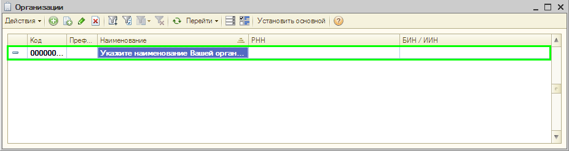
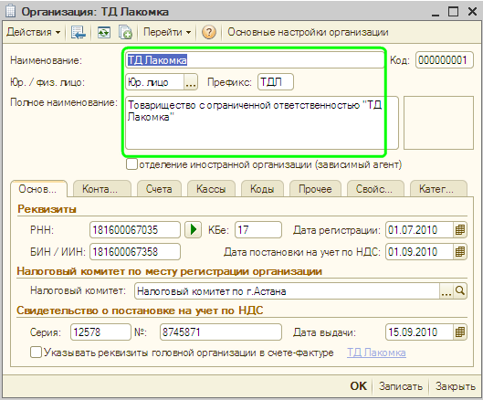
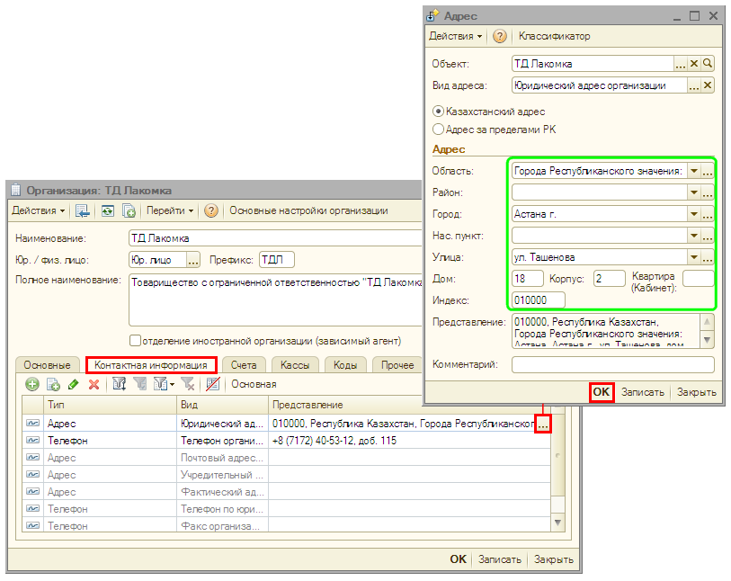

Заполнение сведений об организации
Начиная работу с программой, прежде всего следует ввести сведения об организации, учет хозяйственной деятельности которой Вы будете вести в программе.
- Откройте список организаций.
Для этого в меню Предприятие выберите пункт Организации. В списке уже содержится одна организация с названием «Укажите наименование Вашей организации».
 - Откройте форму для ввода основных сведений о Вашей организации.
Для этого щелкните дважды по строке «Укажите наименование Вашей организации» (или нажмите кнопку  или выберите меню Действия — Изменить в командной панели формы списка).
или выберите меню Действия — Изменить в командной панели формы списка).
- В открывшемся окне заполните основные сведения об организации так, как показано на рисунке:
 - Введите юридический адрес организации.
Для этого в этом же окне перейдите на закладку Контактная информация. Откройте специальное диалоговое окно и заполните в нем юридический адрес организации так, как показано на рисунке:
 - Нажмите кнопку ОК в диалоговом окне Адрес.
- Нажмите кнопку ОК в форме Организации для сохранения сведений об организации и закрытия формы.
Только что Вы научились заполнять сведения об организации.
Из следующего раздела Вы узнаете, как заполняются параметры учетной политики бухгалтерского и налогового учета.